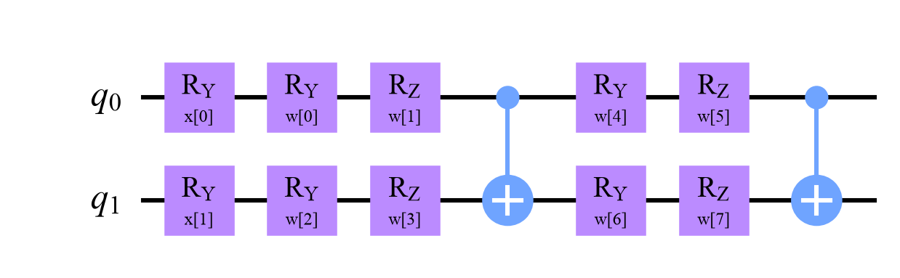
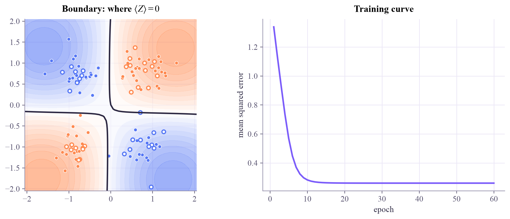
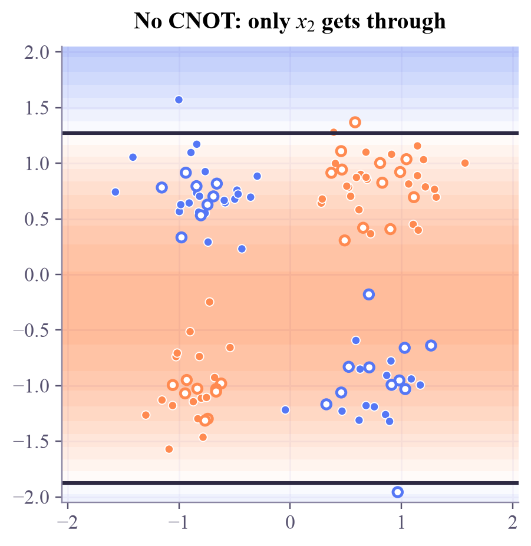

10 parameters, in Qiskit's order: ['w[0]', 'w[1]', 'w[2]', 'w[3]', 'w[4]', 'w[5]', 'w[6]', 'w[7]', 'x[0]', 'x[1]']

Upload a point as two angles, turn trainable knobs, entangle, and read one qubit: a circuit that learns to classify, trained with gradients you compute yourself.

Quantum kernels kept the circuit fixed and let an SVM do the learning. This week the circuit itself learns: its rotation angles become weights, tuned by gradient descent like the networks in the ML tutorial. You already know every ingredient: angle encoding (week 1), expectation values and the parameter-shift rule (QC week 7), loss functions and gradient descent (ML weeks 2 and 3).
A variational quantum classifier (VQC), also called a quantum neural network, has three parts:
Training asks for on class-0 points and on class-1 points, so a natural loss is the mean squared error:
Its gradient needs for every weight, and the parameter-shift rule gives it exactly from two more runs of the circuit: . Then take a gradient-descent step, , and repeat.
The bill. One epoch costs circuit runs for points and weights: 1,360 for 80 points and 8 weights. On hardware, each run is itself hundreds of shots, which is one reason VQCs stay small.
Encode the point as angles, process it with trainable rotations and entanglement, read , and descend the loss with parameter-shift gradients, at circuit runs per epoch.
The circuit at the top is exactly what's simulated. Press Train: each epoch runs the circuit once for every point, twice more per weight, and takes one gradient step. The background shows the score: orange where (class 0), blue where it's negative (class 1). Points with a dark ring are misclassified.
Train on XOR: nearly every point ends up on the right side. Then switch off the CNOT and train again: the boundary turns into horizontal stripes and the accuracy falls toward a coin flip. Finally, train on the moons with 1, 2 and 3 layers: the loss stalls with points still wrong, however many layers you add. Hold that thought until Thursday.
qml-w3d1.ipynb. To change the code and run it yourself, open the notebook in Google Colab (free, in your browser) or download it for your own Jupyter.import numpy as np
from qiskit import QuantumCircuit
from qiskit.circuit import ParameterVector
from qiskit.quantum_info import SparsePauliOp
from qiskit.primitives import StatevectorEstimator
def classifier(layers=2, entangle=True):
x = ParameterVector("x", 2) # the data point: an input, never trained
w = ParameterVector("w", 4 * layers) # the weights: the knobs that training turns
qc = QuantumCircuit(2)
qc.ry(x[0], 0) # encode the point once, as two angles
qc.ry(x[1], 1)
for l in range(layers): # trainable layers: rotate each qubit, then entangle
qc.ry(w[4 * l], 0)
qc.rz(w[4 * l + 1], 0)
qc.ry(w[4 * l + 2], 1)
qc.rz(w[4 * l + 3], 1)
if entangle:
qc.cx(0, 1)
return qc
circuit = classifier()
observable = SparsePauliOp("ZI") # Z on qubit 1 (Qiskit reads Pauli labels right to left)
estimator = StatevectorEstimator()
print(circuit.num_parameters, "parameters, in Qiskit's order:", [p.name for p in circuit.parameters])
circuit.draw("mpl", style="clifford")10 parameters, in Qiskit's order: ['w[0]', 'w[1]', 'w[2]', 'w[3]', 'w[4]', 'w[5]', 'w[6]', 'w[7]', 'x[0]', 'x[1]']

def scores(circuit, X, weight_sets):
"""⟨Z⟩ of qubit 1 for every point (rows of X) and every weight vector: shape (len(weight_sets), len(X))."""
rows = np.array([np.concatenate([W, x]) for W in weight_sets for x in X])
evs = estimator.run([(circuit, observable, rows)]).result()[0].data.evs
return evs.reshape(len(weight_sets), len(X))
def predict(circuit, X, W):
return (scores(circuit, X, [W])[0] < 0).astype(int)
W0 = 0.6 * np.random.default_rng(0).normal(size=8)
print("scores of three points with random weights:", scores(circuit, np.array([[0.3, -1.0], [1.2, 0.4], [-0.8, -0.8]]), [W0]).round(3))scores of three points with random weights: [[0.826 0.127 0.965]]
def loss_and_gradient(circuit, X, t, W):
"""Mean squared error of ⟨Z⟩ against the targets t, its gradient, and the number of circuits it took."""
weight_sets = [W]
for k in range(len(W)):
for shift in (np.pi / 2, -np.pi / 2):
Wk = W.copy()
Wk[k] += shift
weight_sets.append(Wk)
S = scores(circuit, X, weight_sets) # 1 + 2 × (number of weights) rows, one column per point
f = S[0]
df = (S[1::2] - S[2::2]) / 2 # ∂⟨Z⟩/∂w_k for every weight and point
loss = np.mean((f - t) ** 2)
gradient = df @ (2 * (f - t)) / len(X) # chain rule: ∂loss/∂w_k
return loss, gradient, S.sizefrom sklearn.preprocessing import MinMaxScaler
from sklearn.model_selection import train_test_split
def xor_data(n=120, seed=0):
rng = np.random.default_rng(seed)
corner = rng.choice([-1, 1], size=(n, 2))
X = corner + 0.35 * rng.normal(size=(n, 2))
return X, (corner[:, 0] * corner[:, 1] < 0).astype(int)
X, y = xor_data()
X_train, X_test, y_train, y_test = train_test_split(X, y, test_size=40, random_state=0, stratify=y)
scaler = MinMaxScaler((-np.pi / 2, np.pi / 2)).fit(X_train) # features become angles
X_train, X_test = scaler.transform(X_train), scaler.transform(X_test)
def train(circuit, X, y, epochs=60, lr=0.3, seed=0, report=True):
t = 1 - 2 * y # class 0 → +1, class 1 → −1
W = 0.6 * np.random.default_rng(seed).normal(size=circuit.num_parameters - 2)
history, runs = [], 0
for epoch in range(epochs):
loss, gradient, n = loss_and_gradient(circuit, X, t, W)
W = W - lr * gradient # one step of gradient descent
history.append(loss)
runs += n
if report and epoch % 15 == 0:
print(f"epoch {epoch:2d}: loss {loss:.3f}")
return W, history, runs
W, history, runs = train(circuit, X_train, y_train)
print("train accuracy:", np.mean(predict(circuit, X_train, W) == y_train).round(3))
print("test accuracy :", np.mean(predict(circuit, X_test, W) == y_test).round(3))
print(f"circuits run while training: {runs:,}")epoch 0: loss 1.339 epoch 15: loss 0.262 epoch 30: loss 0.260 epoch 45: loss 0.260 train accuracy: 1.0 test accuracy : 0.975 circuits run while training: 81,600
import matplotlib.pyplot as plt
from matplotlib.colors import LinearSegmentedColormap
apricot_blue = LinearSegmentedColormap.from_list("apricot_blue", ["#5577f5", "#ffffff", "#ff8a50"])
def show(circuit, W, history, title, ax_b, ax_l=None):
g = np.linspace(-2.05, 2.05, 45)
gx, gy = np.meshgrid(g, g)
s = scores(circuit, np.c_[gx.ravel(), gy.ravel()], [W])[0].reshape(gx.shape)
ax_b.contourf(gx, gy, s, levels=np.linspace(-1, 1, 21), cmap=apricot_blue, alpha=0.6)
ax_b.contour(gx, gy, s, levels=[0], colors="#2c2842", linewidths=2)
color = lambda labels: np.where(labels == 0, "#ff8a50", "#5577f5")
ax_b.scatter(X_train[:, 0], X_train[:, 1], c=color(y_train), s=22, edgecolors="white", linewidths=0.6)
ax_b.scatter(X_test[:, 0], X_test[:, 1], facecolors="white", edgecolors=color(y_test), s=26, linewidths=1.6)
ax_b.set_aspect("equal")
ax_b.set_title(title)
if ax_l is not None:
ax_l.plot(range(1, len(history) + 1), history, color="#7b5cfa", lw=2.2)
ax_l.set_xlabel("epoch")
ax_l.set_ylabel("mean squared error")
ax_l.set_title("Training curve")
fig, (ax_b, ax_l) = plt.subplots(1, 2, figsize=(10, 4.1), layout="constrained")
show(circuit, W, history, r"Boundary: where $\langle Z\rangle = 0$", ax_b, ax_l)
plt.show()
from sklearn.datasets import make_moons
Xm, ym = make_moons(n_samples=120, noise=0.1, random_state=0)
Xm_train, Xm_test, ym_train, ym_test = train_test_split(Xm, ym, test_size=40, random_state=0, stratify=ym)
moon_scaler = MinMaxScaler((-np.pi / 2, np.pi / 2)).fit(Xm_train)
Xm_train, Xm_test = moon_scaler.transform(Xm_train), moon_scaler.transform(Xm_test)
for layers in (1, 2, 4):
c = classifier(layers)
Wm, h, _ = train(c, Xm_train, ym_train, report=False)
print(f"{layers} layer(s), {4 * layers:2d} weights: final loss {h[-1]:.3f}, "
f"train accuracy {np.mean(predict(c, Xm_train, Wm) == ym_train):.3f}, "
f"test accuracy {np.mean(predict(c, Xm_test, Wm) == ym_test):.3f}")1 layer(s), 4 weights: final loss 0.478, train accuracy 0.875, test accuracy 0.800 2 layer(s), 8 weights: final loss 0.376, train accuracy 0.875, test accuracy 0.875 4 layer(s), 16 weights: final loss 0.379, train accuracy 0.875, test accuracy 0.875
Cell 3 is the heart: one batch of weight vectors, whose differences give every partial derivative at once. Cell 6 shows the ceiling. On the moons, a second layer lowers the loss, but four layers do no better, and the training accuracy stays at 87.5% throughout: more trainable layers can't fix what the encoding doesn't provide.
Remove the CNOT and train on XOR again. What accuracy do you get, and what does the boundary look like? Explain why in one sentence.
plain = classifier(entangle=False)
# TODO: train it on X_train, y_train, print the test accuracy, and draw the boundary with show(...)train(plain, X_train, y_train) returns the weights, the loss history and the number of circuits. show(plain, W, history, "a title", ax) draws the boundary on a matplotlib axis ax.
plain = classifier(entangle=False)
W_plain, h_plain, _ = train(plain, X_train, y_train, report=False)
print("test accuracy without the CNOT:", np.mean(predict(plain, X_test, W_plain) == y_test).round(3))
fig, ax = plt.subplots(figsize=(4.4, 4.1), layout="constrained")
show(plain, W_plain, h_plain, r"No CNOT: only $x_2$ gets through", ax)
plt.show()
print("Without the CNOT nothing links the two qubits, so the measured qubit 1 only ever 'sees' x₂:")
print("the boundary is made of horizontal lines, and XOR needs both features at once.")test accuracy without the CNOT: 0.525

Without the CNOT nothing links the two qubits, so the measured qubit 1 only ever 'sees' x₂: the boundary is made of horizontal lines, and XOR needs both features at once.
The general rule: if no gate ever connects two qubits, measuring one of them only tells you about that qubit's own input. Entangling gates are how a VQC lets features interact, just as XOR needs.
Models like this one were proposed around 2018 by several groups at once (Farhi and Neven; Mitarai and coauthors; Schuld and coauthors; Havlíček and coauthors) and are the most studied QML models on today's hardware. This week tests them the way week 2 tested kernels: readout and loss, hybrid training, re-uploading, and an honest duel with a classical network.
Mitarai, Negoro, Kitagawa and Fujii (Osaka University), "Quantum circuit learning" (Physical Review A, 2018), which trained circuits with shifted parameters. Schuld, Bocharov, Svore and Wiebe, "Circuit-centric quantum classifiers" (Physical Review A, 2020). The PennyLane demo "Variational classifier" builds a similar model step by step.
Tomorrow: from to probabilities, losses and shots.
Tap the button to save it. Short and steady wins.
Marked by mistake? Undo